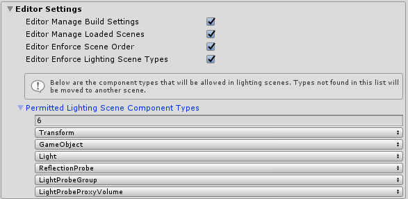

场景系统概述 (Scene system overview)
何时使用scene system
如果您的项目包含一个场景，则可能不需要Scene System。当满足以下一个或多个条件时，此功能最为有用：
- 您的项目有多个场景。
- 您习惯于单场景加载，但是不喜欢它销毁MixedRealityToolkit实例的方式。
- 您想要一种简单的方法来添加多个场景以构建您的体验。
- 您需要一种简单的方式来跟踪正在进行的加载操作，或者一种简单的方式来控制一次加载多个场景的场景激活。
- 您希望在所有场景中保持一致且可预测的照明。
如何使用scene system
- 场景类型 Scene Types
- 内容场景加载 Content Scene Loading
- 监视内容加载 Monitoring Content Loading
- 照明场景加载 Lighting Scene Loading
编辑器设置
默认情况下， Scene System在Unity编辑器中强制执行多种行为。如果发现这些行为很繁琐，则可以在 Scene System profile的Editor Settings部分中将其禁用。
Editor Manage Build Settings:如果为true，该服务将自动更新您的构建设置(build settings)，确保添加了所有管理器(manager)，照明和内容场景。如果要完全控制构建设置，请禁用此功能。Editor Enforce Scene Order:如果为true，则该服务将确保首先在场景层次结构中显示manager场景，然后是照明，然后是内容。如果要完全控制场景层次，请禁用此功能。Editor Manage Loaded Scenes:如果为true，该服务将确保始终加载管理器(manager)，内容和照明场景。如果要完全控制在编辑器中加载哪些场景，请禁用。Editor Enforce Lighting Scene Types:如果为true，则该服务将确保照明场景中仅允许使用PermittedLightingSceneComponentTypes中定义的与照明相关的组件。如果要完全控制照明场景的内容，请禁用。
